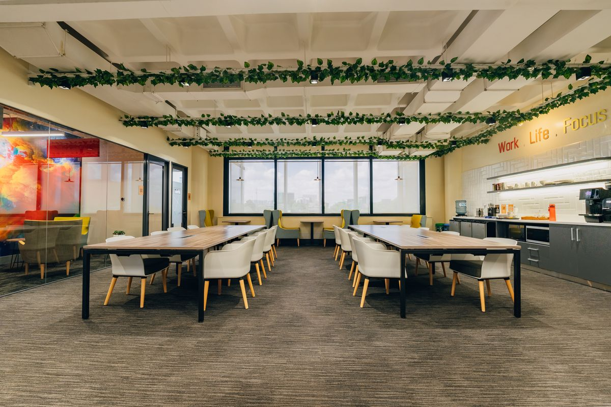
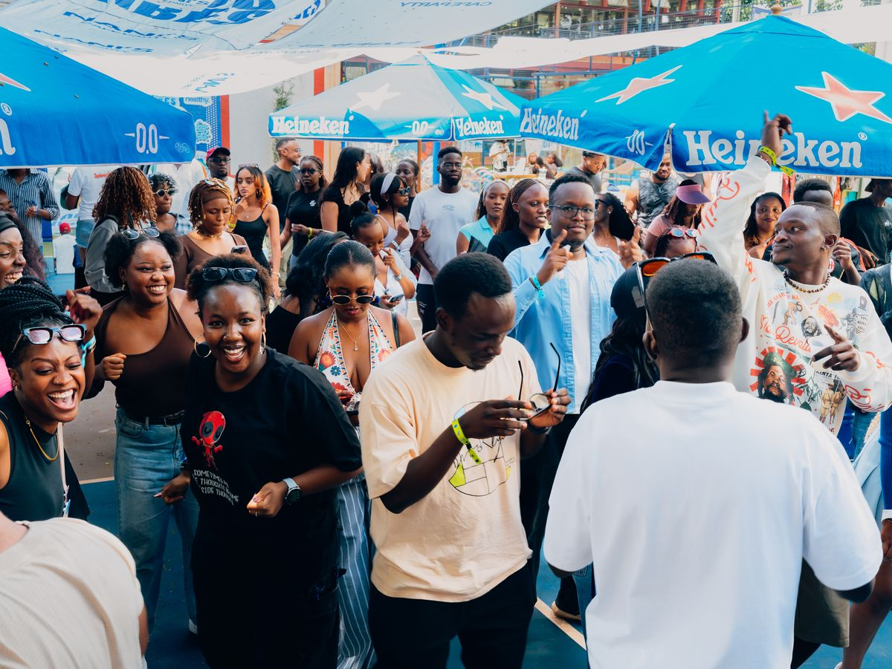
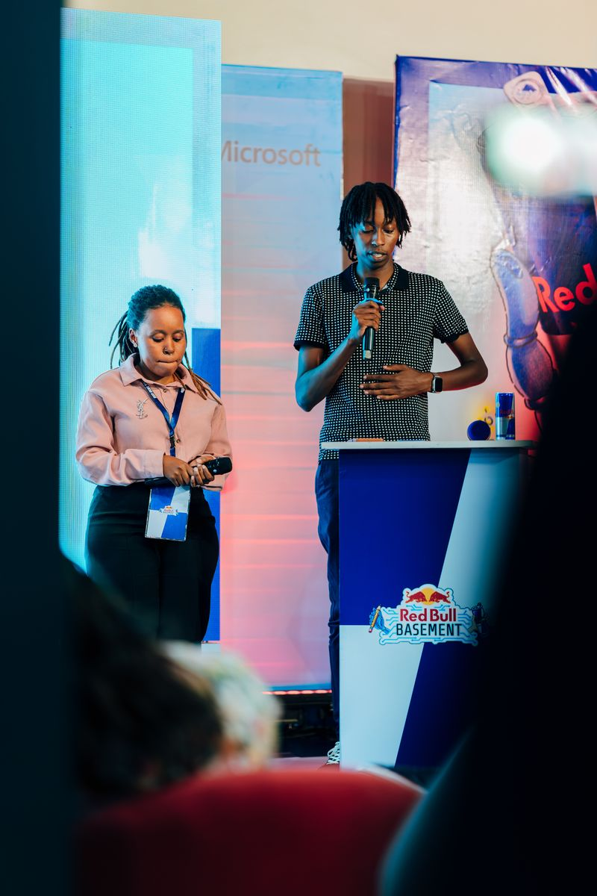

№ 003 · Disciplines
Seven ways
Seven ways
we work with light.
From a single plate to a full hospitality refresh — every discipline approached with the same patience and intent.
Scroll to explore

01 · Food
Food→

02 · Architecture
Architecture→
03 · Corporate
Corporate→

04 · Events
Events→
05 · Portraits
Portraits→

06 · Commercial & Documentary
Commercial & Documentary→

07 · Sports & Brand
Sports & Brand→
08 · Inquire
Start a project→